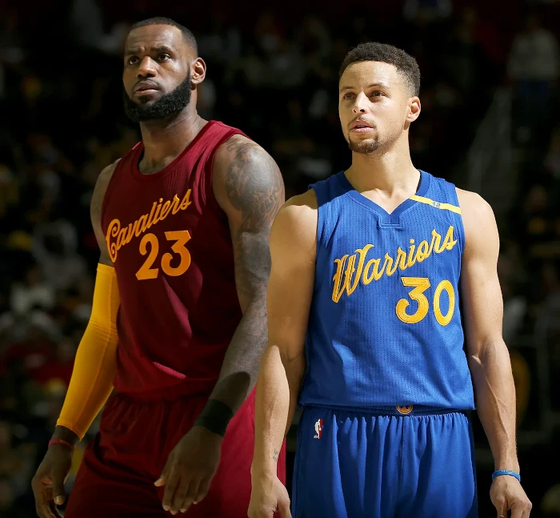

Stephen Curry
Wardell Stephen Curry II (Akron, 14 de março de 1988) é um basquetebolista norte-americano que atua como armador. Atualmente joga no Golden State Warriors, da National Basketball Association. Muitos jogadores e analistas o consideram como o melhor arremessador da história do esporte. Acredita-se que ele tenha revolucionado o jogo de basquete, inspirando as equipes a empregar a cesta de três pontos com mais frequência como parte de sua estratégia.
Histórico de Confronto: Stephen Curry X Lebron James
A primeira vez que os dois craques se enfrentaram foi na temporada 2009-10, a primeira de Curry como armador do Golden State Warriors. Na ocasião, LeBron comandou a vitória do Cleveland Cavaliers, com 31 pontos anotados.
LeBron e Curry já se enfrentaram quatro vezes nos Playoffs, todas elas em finais. E quem leva vantagem, é o atleta do Golden State: 15 vitórias e três títulos contra sete vitórias e uma conquista de LeBron.
LeBron James e Stephen Curry dominaram a NBA entre as temporadas de 2014/15 e 2017/18, quando Cleveland Cavaliers e Golden State Warriors protagonizaram quatro finais consecutivas. Antes disso, nenhuma dupla de equipes havia se enfrentado em mais de duas finais seguidas pela liga.
O primeiro grande momento entre os craques foi justamente na temporada 2014/15. Curry já era tido como um grande jogador, mas foi nesta edição da NBA que ele começou a mostrar todo o seu potencial de fato. Foi eleito MVP e levou os Warriors para a primeira final em 40 anos.
Stephen Curry e Kevin Durant
Para temporada 2016-17, o Golden State acertou com o ala Kevin Durant, ex-jogador do Oklahoma City Thunder (eliminado nas finais de conferência na temporada anterior pelo Warriors) e um dos melhores jogadores da NBA. Com 4 All-Star (Curry, Durant, Draymond Green e Klay Thompson) no elenco, muitos analistas questionaram a competitividade da liga. A intenção do time Oakland era formar uma "dinastia" que ganharia campeonatos por muitos anos. em 28 de outubro de 2016, sobre a vitória do New Orleans Pelicans chegou a 1 600 bolas de longa distância na carreira, tornando-se o 19º jogador a ser o mais rápido a alcançar a marca. Em 4 de novembro, o recorde de 157 jogos seguidos de Curry na NBA fazendo pelo menos uma bola de três pontos foi quebrado durante a derrota dos Warriors por 117 a 97 para o Los Angeles Lakers, depois de ter um aproveitamento 0 de 10 nos tiros de longa distância. Ele havia convertido pelo menos uma cesta de três em todos os jogos da temporada regular desde 11 de novembro de 2014. Três dias depois, ele fez 13 bolas de 3 contra o New Orleans, estabelecendo o recorde de mais bolas de longa distância convertidas em único jogo. Steph teve um aproveitamento de 13-17 nos arremessos de 3 pontos contra os Pelicans em seu primeiro jogo de 40 pontos na temporada, terminando com 46 pontos na vitória por 116 a 106. Em 11 de dezembro, Curry fez duas bolas de três pontos contra o Minnesota Timberwolves para passar Steve Nash em 17º na lista de maiores pontuadores do perímetro da NBA.
O Legado de Stephen Curry
O armador é considerado por muitos como o maior arremessador da história da NBA. Ele é creditado por revolucionar o jogo de basquete para sempre ao inspirar equipes de basquete, do ensino médio à NBA, a empregar regularmente o arremesso de três pontos ao seu jogo. Os analistas se referiram a ele como "o Michael Jordan da era dos três pontos", afirmando que ele fez pelos três pontos o mesmo que Jordan fez pela enterrada. Robert O'Connell, do The Guardian, cita o jogo do camisa 30 em 27 de fevereiro de 2013 contra o New York Knicks, no qual ele fez 11 de 13 arremessos de três pontos para uma performance de 54 pontos, como o início da era dos três pontos. A era foi referida como "O Efeito Steph" e "A Revolução dos Três Pontos da NBA".